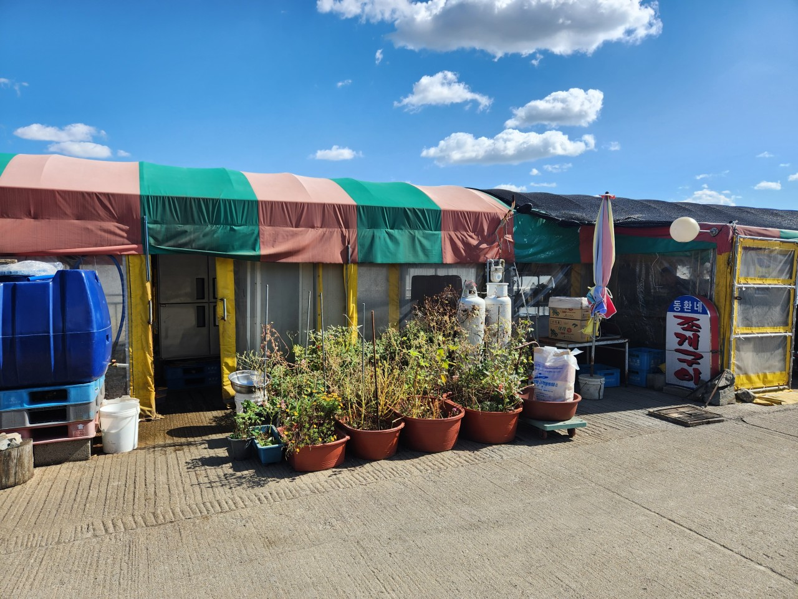

✨ 동환네 조개구이
동환네 조개구이는 파도 소리가 바로 닿을 듯한 바닷가에 위치하여, 정겨운 포장마차식 감성과 활기찬 분위기가 물씬 풍기는 명소입니다. 붉게 타오르는 숯불 위에서 싱싱한 조개를 구워 먹으며, 서해 노을과 노포 스타일의 정취를 동시에 만끽할 수 있는 최고의 장소입니다.
주소: 경기 안산시 단원구 대부동동 산314-18
운영시간: 금~수: 11:00 ~ 20:00. 매주 목요일 휴무(목요일이 임시공휴일 및 법정공휴일일 경우 영업).
📞 0507-1418-1038
🍽️ 메뉴 추천
- ☝️ 조개구이(찜) 스페셜: 조개구이(찜)+새우구이+키양념+산낙지+칼국수
💵 특대 150,000 / 4인(대) 130,000 / 3인(중) 110,000 / 2인(소) 90,000 - ✌️ 조개구이(찜)
💵 대 80,000 / 중 70,000 / 소 60,000 - 👌 산낙지
💵 30,000
🗺️ 위치 및 찾아오시는 길
주차: 식당 앞 주차 가능.
대중교통: 안산역 또는 오이도역에서 123번 또는 790번 시내버스 탑승 후 '나루터' 정류장에서 하차.
동환네 조개구이는 단순한 식사를 넘어 바다 뷰와 노포 감성을 함께 즐기는 특별한 경험을 선사합니다. 싱싱한 조개와 얼큰한 칼국수로 일상의 스트레스를 시원하게 날려보세요! 이번 주말, 서울 근교의 낭만적인 대부도 동환네 조개구이에서 활력 가득한 서해 먹방 여행을 완성해 보는 건 어떨까요?
← 안산시 대부동동으로 돌아가기